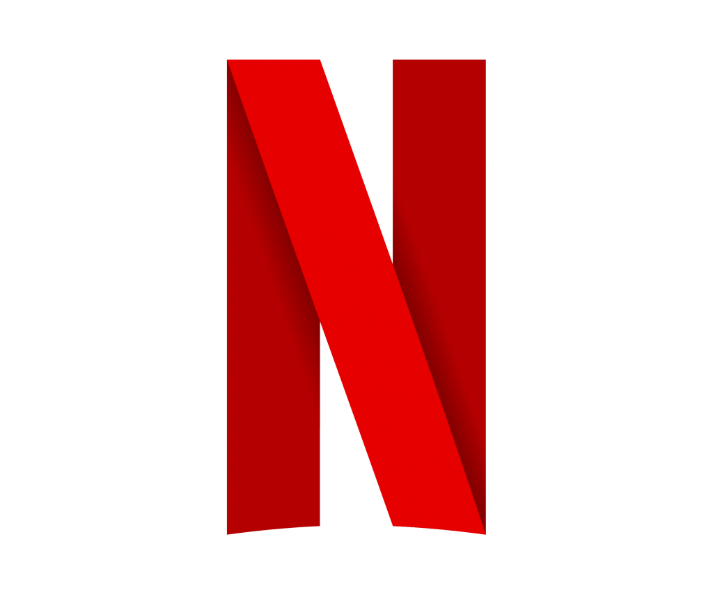

REVOLUÇÃO RUSSA
"A Revolução Russa, de 1917, foi a concretização de uma série de revoltas pelas quais o país passava desde 1905 e que tiveram várias consequências, como o fim do czarismo (monarquia) e a tomada de poder pelos socialistas."

1. Filme: A Sombra de Stalin (Mr.Jones)
Data de lançamento: 4 de Fevereiro de 2021.
Classificação: 14 anos.
Duração: 159 minutos.
Diretor: Adnieszka Holland.
Disponível em: Netflix

Nota geral: 3.4

Sinopse:
O jornalista galês Gareth Jones arrisca a vida para expor a verdade sobre a fome devastadora na União Soviética no início dos anos 1930.
Trailer:

2. Série: Os Últimos Czares
Data de lançamento: 3 de Julho de 2019.
Classificação: 16 anos.
Duração: 270 minutos.
Diretor: Adrian McDowall, Gareth Tunley.
Disponível em: Netflix
Nota geral: 4
Sinopse:
A revolta popular se alastra pela Rússia no começo do século XX, mas o Czar Nicolau II resiste a mudanças. O resultado é a revolução e o fim brutal da dinastia Romanov.
Trailer:

3. Documentário: Eles Se Atreveram - A Revolução Russa de 1917
Data de lançamento: 2007.
Classificação: Livre para todos os públicos.
Duração: 157 minutos.
Diretor: Contraimagem.
Disponível em: Youtube
Nota geral: 4.2
Sinopse:
Documentário sobre a Revolução Russa que cobre não só as duas revoluções de 1917 (Fevereiro e Outubro), mas também a Revolução de 1905. Carregado de informações históricas, feito com um apanhado de imagens, vídeos e músicas da época, além de trechos de filmes do Eisenstein.

4. Série: Corto Maltese - O Filme
Data de lançamento: 6 de Agosto de 2002.
Classificação: 14 anos.
Duração: 92 minutos.
Diretor: Pascal Morelli.
Indisponível.
Nota geral: 3.6
Sinopse:
Baseado no HQ de Corto Maltese, de Hugo Pratt, a história mostra Corto Maltese e seu parceiro, o russo louco Rasputin, na Sibéria durante a Revolução Russa. Eles são contratados pela sociedade secreta chinesa Lanternas Vermelhas para roubar um trem que carrega o tesouro imperial do czar.
Trailer:

5. Filme: Doutor Jivago
Data de lançamento: 14 de Fevereiro de 1966.
Classificação: Livre para todos os públicos.
Duração: 197 minutos.
Diretor: David Lean.
Disponível em: HBO Max
Nota geral: 4.2
Sinopse:
O filme conta sobre os anos que antecederam, durante e após a Revolução Russa pela ótica de Yuri Zhivago, um médico e poeta. Yuri fica órfão ainda criança e vai para Moscou, onde é criado. Já adulto se casa com a aristocrática Tonya, mas tem um envolvimento com Lara, uma enfermeira que se torna a grande paixão da sua vida.